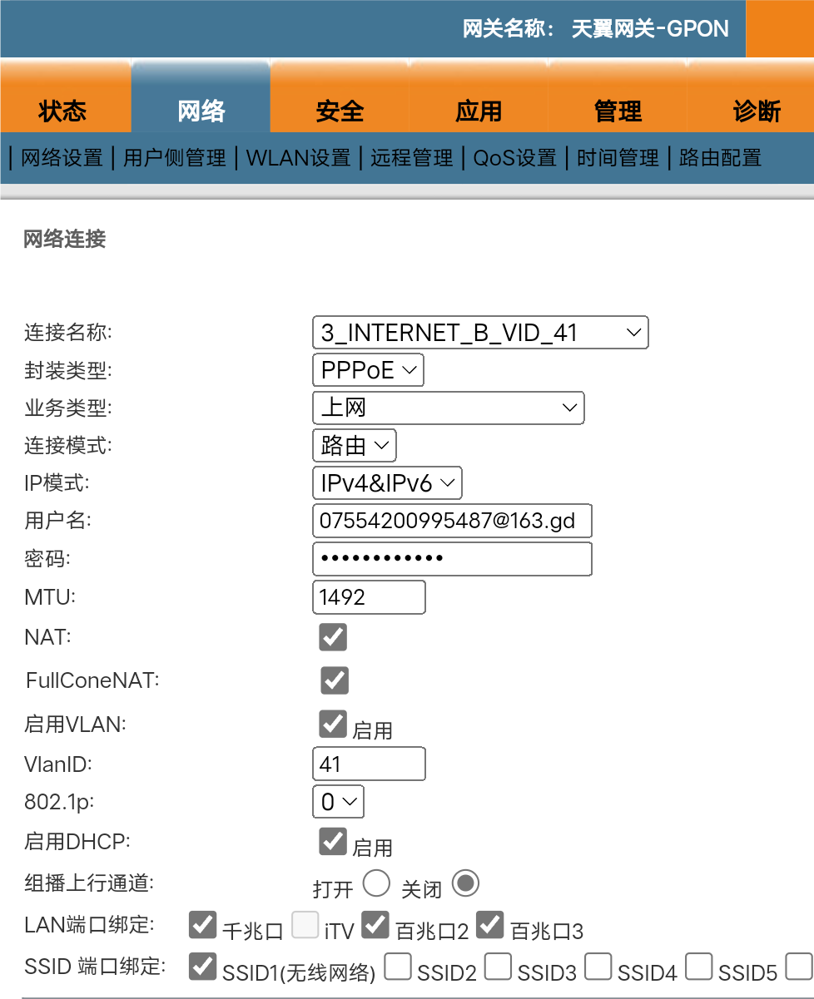
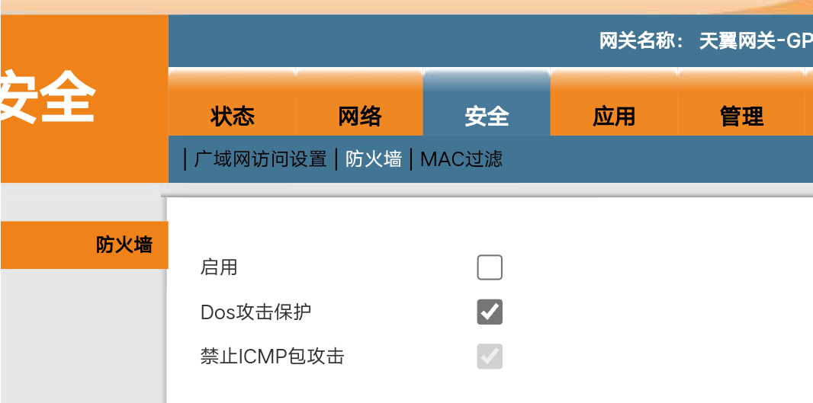
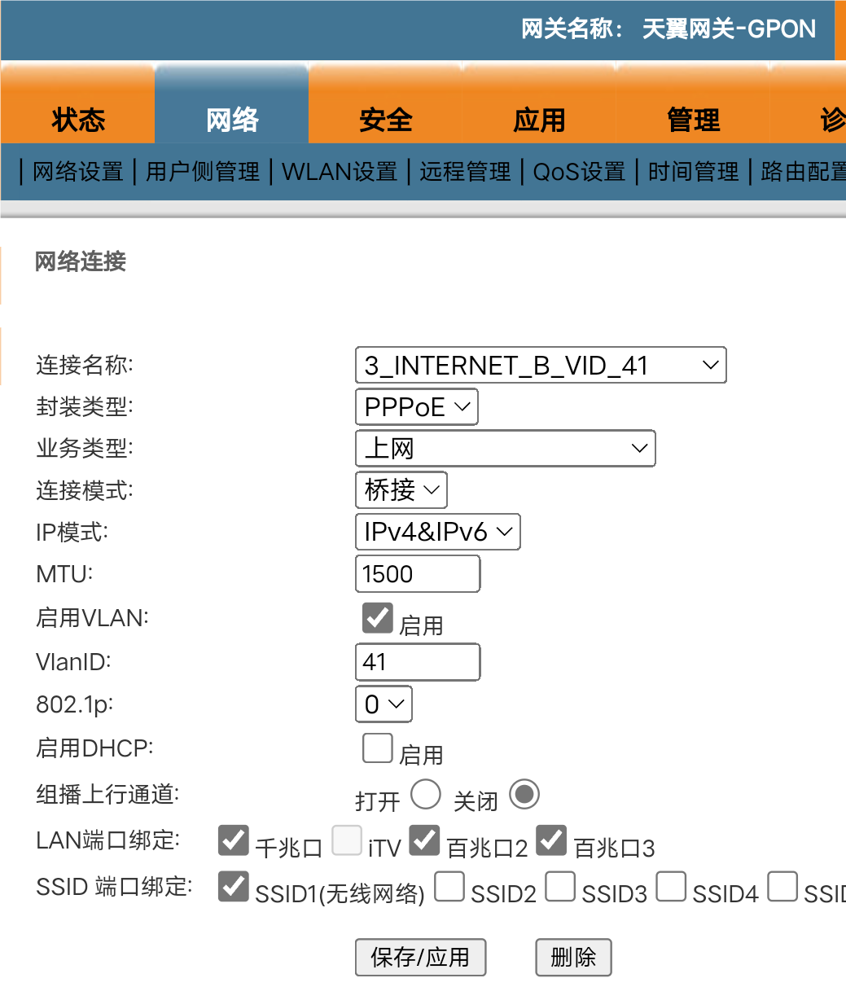
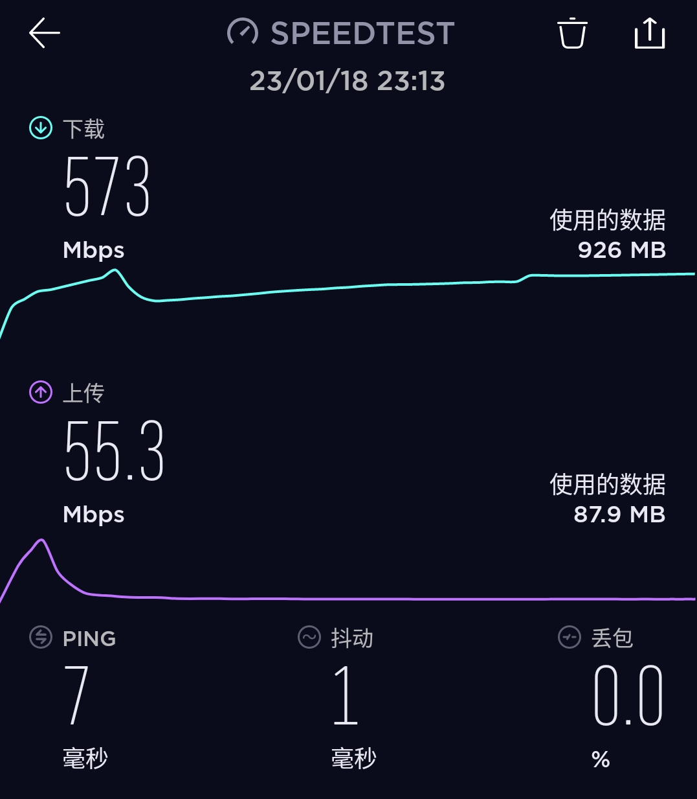
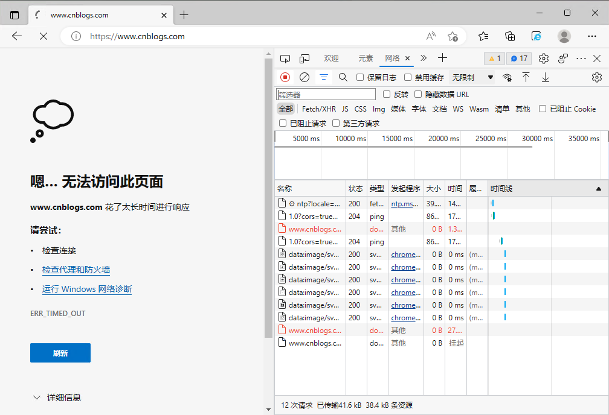
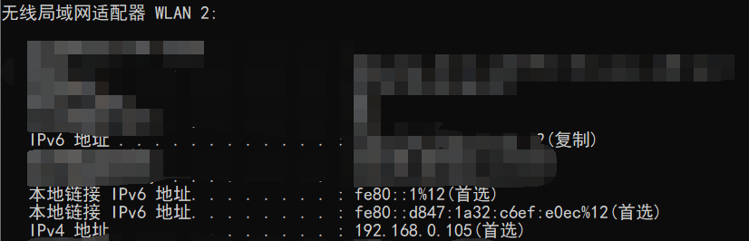

阅前提示：本文约 5000 字，预计阅读时长 > 5 分钟。
# 起因
由于想跟好友联机 minecraft，而使用 natfrp 做内网穿透时发现有很多问题，包括延迟高且不稳定、速率低、流量限制、高峰时期断连等。刚好想起来家里的网络已经被我启用了 ipv6，因此试图使用 ipv6 来直接对公网开放 minecraft 服务器。
# 开始第一次尝试
当前状态：
- 光猫使用路由模式，自主拨号并获取两种 ip 地址（除非特殊说明，否则以下简称 ip）
- 无线路由器（下简称路由器）使用路由模式
- 所有设备连接在路由器上，并能获取到 ip

当前问题：
- 首先尝试外网直接连接服务器 ipv6，失败
- 外网无法 ping 通任何内网主机
- 光猫获取到的 ipv6 地址仍然无法通过外网 ping 通
- 在光猫中设置端口映射或 DMZ 主机，无效
实际上，上述内容已经花了我一下午来检查和排查；网上搜索相关内容，有人说获取到的 ipv6 是 240e 开头的，说明是经过了 NAT（类似 ipv4，所以肯定访问不到）；但是这种说法显然有问题，首先 ipv6 只有在特殊环境下才需要 NAT，其次 2 开头的地址至少不是内网地址。
另有说法称，运营商（我用的是电信）会用防火墙屏蔽入站流量，防止你开服务器。根据我的实验，这个说法是正确的。
随后开始折腾，既然防火墙阻碍了我，那我关掉就好。
但是现实很惨淡，运营商早就猜到你会搞这一手，所以直接不允许你关闭防火墙。
这里包括了最后的那个防止 ICMP 包攻击，还有其他的防火墙直接不显示。

# 换个地方拨号？
网上提供了一种解决思路，即光猫改桥接、使用路由器进行拨号；这样做有一些好处，例如路由器的性能更强、可以提供更快的网速，以及很高的可玩性、灵活性等等，这里直接把路由器换成软路由就能实现非常多的玩法，因此我就着手开始改桥接。
改的过程实际上非常简单，找到宽带的账号密码，进入光猫的超级用户，然后直接改桥接即可。

随后，将路由器设置为 PPPoE 拨号连接；这里就不放图了，各家路由器的配置流程都是一回事。
关闭路由器的防火墙，现在，所有的设备又能重新获取到 ip，且具有公网 ipv6 地址。当然由于 Windows 防火墙的配置，需要关闭 Windows 的防火墙才能从外网 ping 通。
大获全胜！网速也提升到了 570M（家里办理的 500M 宽带，如果直接从光猫拨号 + 路由，则速度最高 470M）

同时，Minecraft 也能正常从外网通过 ipv6 连接，看起来一切完美。
# 核心问题：网页无法访问
一切完美？当然是不可能的。一定会出问题，而且是大问题。
配置好 ipv6 之后，一开始所有设备工作正常，网速和解析速度起飞。
然后，用了半个小时左右，问题开始逐步显现。
最开始，我在网上搜索一个 Windows 方面的配置问题，并且点进去了一个博客园的链接。然后，网页并没有按照我预想中的那样飞快加载，而是不断转圈。
最后：

一开始我以为这是必应的中转链接出现问题了（百度日常），因为点击必应的搜索结果并不是直接访问目标网址，而是先通过一个必应的链接重定向到目标。这个重定向有时候会失败，是正常的。但是，我直接访问目标网址时，居然也不能进去，这就非常奇怪了。
这时候我还是乐观的心态，认为是博客园的服务器出了问题，也没有去其它设备上尝试。但我仍然重视了这个问题，并立即去搜索解决方法。因为是开了路由器拨号 + ipv6 之后才出现的问题，所以查找方向也很明确了。结果，就在我查找的过程中，发现了更多的问题。
百度经验、百度知道、百度贴吧、知乎… 这些网站一个接一个地挂掉；有时候网站一开始能正常访问，再开的时候就加载不出 JS 和 CSS（变成了没有渲染的样式，仅限知乎），然后就是一样的不响应。症状跟博客园完全一致，控制台里没有任何有效信息，只有一个响应超时。
# 先恢复正常访问
一通摸索之后，我找到了暂时恢复的方法：在网卡选项里禁用 ipv6（Internet 协议版本 6）。
禁用后，所有网页恢复正常，但这显然不可取，因为我的目的就是使用 ipv6，而禁用它也就丧失了所有 ipv6 能力。
需要注意的是，现在出问题的网站都不是纯 ipv6 站点，有些是纯 ipv4 站点，但双栈域名居多。这时候访问纯 ipv6 网站是全部成功的，ipv6 测试也是全绿通过，并且无论何种类型的网站都有大量能成功访问的。
# 退一步试试
退一步，指的就是我找到一种方法，让浏览器只使用或优先使用 ipv4 进行访问。
因为出问题的只有浏览器，我电脑里其它软件全都正常运行。
后续补充：今天发现 Windows 版的微信也不能正常使用，二维码加载不出来，禁用 ipv6 后恢复。。
但是，网上相关的教程极少甚至没有，偶有几个是针对 Firefox 或 chrome 的，而我使用的是 edge；就算我能参考 chrome，教程也是针对 Linux 而非 Windows。
# 再退一步
好的，如果浏览器不行，那我就找个方法让整个操作系统都优先使用 ipv4。
微软提供了一个文档，通过修改注册表的方法来实现全局优先 ipv4、禁用 ipv6、优先 ipv6 等等。
一看到这里，我立即兴奋地尝试了。改了注册表，重启，访问：
ERR_TIMED_OUT .png
好，居然没用。微软，不愧是你。
重启很多次无效，当时已经半夜 2:30，我没有了折腾的心情，只想赶紧睡觉。
# 第一次折腾失败
网上又找了很多相同症状的用户，解决方案要么是改注册表，要么是说路由器兼容性有问题。
好吧，反正跟我联机的同学也不是很在意，natfrp 似乎还能继续用用。
于是，彻底宣告失败，我重新改回了光猫拨号、路由桥接，随后所有网络恢复正常（除了外网还是不能访问这里的所有 ipv6；当然，也包括 ipv4，因为有 NAT）。
这就结束了吗？怎么可能，不搞到好用我是不会罢休的。
于是，第二天，我又开始了新一轮的折腾。
# 第二次尝试
重新尝试，同样的光猫改桥接，同样的路由器拨号。同样的正常 ipv6 公网访问，但是这一次似乎是运气比较好，网页访问全部正常使用，并且坚持了至少 4 个小时。
中途离家 4 小时，回来之后，惊喜地发现，这些网页又打不开了 😃
这时候我就已经明白，无论怎么修改电脑或者路由器配置都无效，于是没有再做尝试，转而对现在的情况进行分析，并希望通过其它方法解决需求。
# 转机
在我整理思路的时候，我意识到，实际上我只需要服务器一台电脑能够获取正常入站的 ipv6 地址（正常的 ipv6）即可，其余设备甚至根本不需要启用 ipv6。这时候，我首先想到的就是：
# 一号多拨
一号多拨，指的是我通过同一个光猫，使用同一个宽带账号，分别在两台设备上进行拨号。
我的最初想法是，服务器电脑直连光猫并自己拨号获取正常的 ipv6 地址，同时路由器也自己拨号，但只启用 ipv4。
网上搜索发现，这种方法当然是可行的，前提是运营商支持多拨。
折腾中
没有任何侥幸，拨号失败。电脑上尝试第二次拨号时直接返回错误 629。
再换一种角度，重新分析我的需求。服务器能使用正常的 ipv6，同时其余设备仅需要 ipv4（最多需要 ipv6 内网而非公网访问）。因此，我做了如下操作，来使得二者兼顾。
# 最终如何解决
如果你的需求和遇到的问题跟我完全一样，那么也许可以参考我的方法来临时解决。
提示：最终的解决方案也并不完美，只不过暂时保证了两边可以都解决主要矛盾
以下是我的解决方案：
# 1. 将路由器的内网 ipv6 地址分发从无状态改为有状态。
无状态获取指的是机器自己配置地址，然后通过 NDP 等方式确定地址有效性即可；有状态获取类似 DHCP，不过分配的地址是 ipv6。
这一步解决了手机联网的问题；由于我的网络环境中手机为主要设备，而安卓系统并不支持通过 DHCPv6 进行有状态获取 ipv6 地址；于是所有的手机都只能通过 ipv4 联网，解决了所有上网问题。
# 2. 为电脑配置虚假或者无效的 ipv6 地址
这是我在测试的时候忽然想到的主意，既然 ipv4 地址在手动配置错误的情况下无法联网，那么 ipv6 应该也是一样的。
ipv6 中同样有很多保留地址，例如 fe80 开头的地址表示本地链路地址，无法进行跨子网路由，因此给我自己的电脑配置一个 fe80::1 的地址即可。
配置后，网卡状态中 IPv6 连接变为无 Internet 访问权限，使用 ipconfig /all 查看 IP 地址，发现手动配置的 ipv6 地址变成了本地链接 IPv6 地址。

此外，这里网卡仍然获取到了一个 IPv6 地址，但后面提示（复制），检查其地址发现这个地址是我的服务器电脑的公网 ipv6 地址（因此在此处打码作保护）；这可能是一些其它方面的机制，但并不影响服务器和我的电脑的正常工作。同时，由于内网 ipv6 地址被正常配置，我仍然可以通过内网 ipv6 来访问服务器（包括文件服务器、网页服务器、minecraft 和远程桌面）。
这一步解决了环境中主要的电脑设备：我自己的使用需求。当然没有完全解决，纯 ipv4 模式下访问部分双栈网站时速度还是比较慢，但能够正常使用已经是极其难得了。
# 3. 为 Windows 11 配置
环境中存在另一台常用的电脑，而它搭载的是 Windows 11 家庭版。
在 win11 下可以执行相同的步骤进行配置，只不过需要多出一个步骤：你需要在系统设置中手动设置 ipv6 DNS，而不能使用自动获取。
这一步是因为，即便手动配置了 ipv6 地址，win11 似乎也不会立即使用，而是先试图通过 DHCP 等方法获取 ipv6 地址以及 DNS 服务器等；而在自动获取 DNS 的过程中，路由器很可能就为它分配了一个 ipv6 地址，导致我们自己设置的地址完全变成内网地址，而无法实现目的。
# 结语
至此，全部流程结束，解决方案全部执行。服务器正常接受公网入站流量，其余设备配置后均能实现正常上网。
但是，我并不对现在的解决方案满意。原因很简单，我开 ipv6 不仅是为了服务器使用，更是为了提高日常上网体验，同时接轨最新技术（虽然 ipv6 都是 12 年前的玩意了）；现在虽然解决了问题，但并未达成全部目的，因为除了服务器主机以外没有设备能够正常使用 ipv6 的。这个方法顶多也就临时用用，实际上我也就这一个寒假的需求，假期结束返校前肯定会恢复光猫拨号的，因为服务器主机之后只作为内网打印服务器，不再有公网访问需求。此外，每次新加一台电脑，都需要这样设置一遍无效的 ipv6 地址，以便正常访问网页。
所以，整体看下来，其实只是在两边的矛盾中取了一个居中妥协的值，为主要矛盾作了让步。我也不是每天都会折腾网络，更多时候还是希望它日常使用能稳定；但我又不希望放弃服务器的公网访问，因此这两者就是核心问题，而最终的方案也就向这两个问题进行妥协。
Anyway，反正问题算是解决了，但愿 ipv6 的部署进度还能快一点吧（
明天就是除夕了，浅放一张 AI 画的胡桃吧，祝大家新年快乐！
胡桃没画成，人要么太大要么太小，随便搞了个背景算了（）